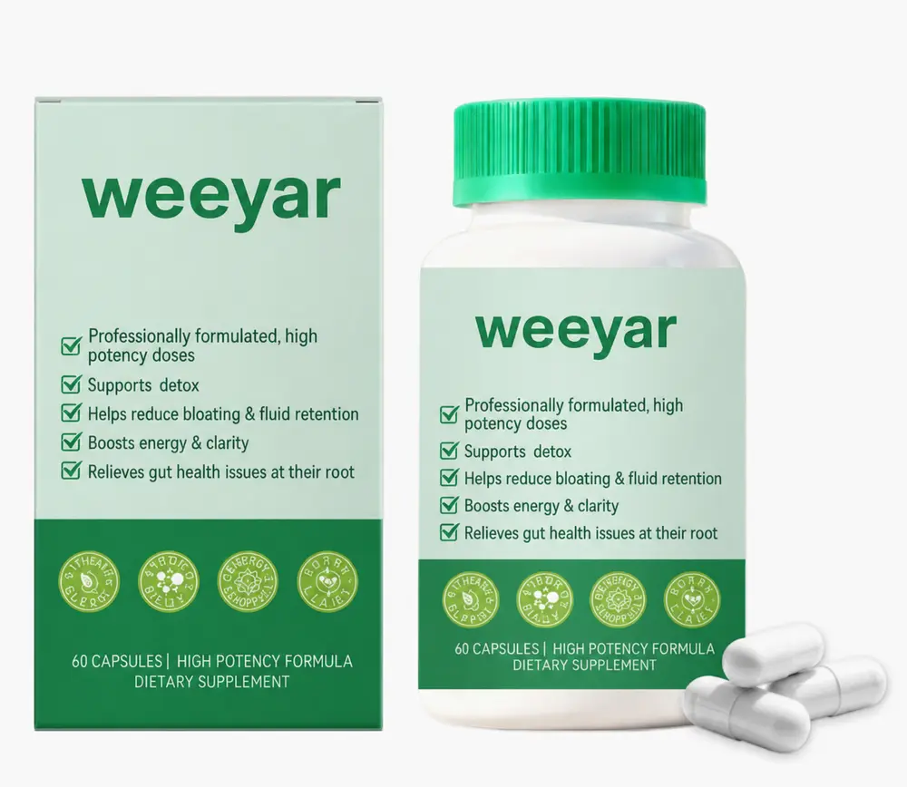

← Back to Products
Capsules
Daily Probiotic Capsules
Daily probiotic capsule format for digestive wellness collections.
Product FormatCapsules
Packaging60 capsules / bottle
BrandingPrivate Label Available
ServiceReady Stock & OEM / ODM
Product & Cooperation Options
- Flexible capsule count
- Custom label and carton
- Formula development support
- Export-ready documentation
Product information is provided for B2B cooperation. Final formula, ingredients, serving size, packaging specifications, claims and compliance documents are confirmed for the selected product and destination market.
BUYER QUESTIONS
Private Label & Wholesale FAQ
Can I request samples?Yes. Sample availability and timing depend on the selected formula and packaging.
What is the MOQ?MOQ depends on the product, formula and packaging. Ready-stock options support smaller trial orders.
Can packaging be customized?Private labels, bottles, pouches and cartons can be discussed according to your project quantity.